What each part of DAHW does, and how to use it. The first time you open DAHW, it starts on Late Night Flip, a project with one Sampler track looping a drum break, so Play plays something right away.
Getting around
Five tabs run along the bottom of the screen.
ArrangeThe song: tracks, clips and the loop.
ClipThe selected clip: notes in the piano roll, steps for drums, or audio.
DeviceThe selected track’s instrument, with its effects one tap away.
MixLevels, pan and sends for every track, the returns and the master.
BrowseFiles, videos, recordings, every sample you have loaded, and MIDI files.
Select a track or a clip in Arrange, and Clip and Device show it. Tap a track’s name to open its device, and hold the Device tab to open the selected track’s Device Chain. Every value is a tile: tap it to open it, drag sideways to change it, tap the number to type one, and double-tap to reset it.
With a hardware keyboard, A S D F G H J K L ; ' play the white keys and W E T Y U O P the black keys on the selected track. Z and X change the octave, C and V the velocity, Space plays and stops, and Cmd+Z and Shift+Cmd+Z undo and redo.
Sampler
Record with the mic, import any audio file, or take the sound from a video. Set markers and the loop, zoom in to a single cycle, fit the tempo to the bars, warp it in Re‑Pitch or Complex, find its key, transpose it, slice it, and play it on a chromatic keyboard. Every sample you load is kept, ready for any project.
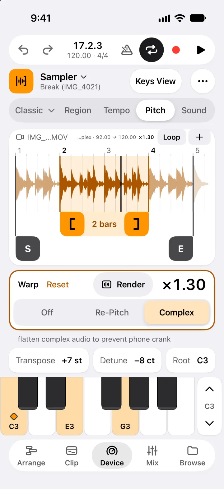
Get a sound in
Select a Sampler track and open Device. For a new one, tap Add in Arrange and choose Sampler.
An empty Sampler offers two ways in. New Sample records, or imports from Files or Photos & Videos to use the sound of a video. From Samples lists every sample you have loaded, in any project, to preview and load.
To record, choose New Sample, then Record. Before a take, the Record card is a tuner: it shows the note you play, how far off it is and which way to turn. Press Record to start.
With a sample loaded, More has Replace Sample…, Replace from Samples… and Record Over…. You can also start from Browse: pick a file, a video, a recording or a sample, then where it goes.
DAHW finds the tempo and the key as the sound loads. A sample you have fitted before comes in on bar 1, looped on its bars and warped.
Set the loop and warp it
The first page tab shows the play mode (Classic at first): tap it for the Loop page. Drag the Loop Start and Loop End handles under the waveform, or the bar between them to move the loop. S and E set where the sound starts and ends.
Pinch to zoom, down to a single cycle. A double tap jumps between the whole sample and the loop.
On Tempo, set the loop on the beat, open Loop Is to say how many bars it is, and tap Fit. The tempo comes from the loop, Warp turns on, and the first Fit puts bar 1 on Loop Start. Sample BPM has Detect, In Time (the loop against the click) and, when open, Tap.
On Pitch, set Warp to Re‑Pitch (speed and pitch together, like tape) or Complex (tempo and pitch apart). The sample now follows the song’s tempo. Render bakes it all into a new sample.
Transpose names the sample’s key, or a single note’s pitch. Open it and tap Key for To Song Key, which moves the sample into the song’s key and in tune, and Use as Song Key. Detune sits beside it.
Play it on the keys
Play the keyboard at the bottom. The diamond marks the root key (C3 at first), and the arrows beside the keys change octave.
Hold the first page tab for a moment to choose how it plays: Classic sustains and loops while a key is held, One-Shot plays to the end, and Slice puts slices on pads.
In Classic and One-Shot, Keys View at the top right turns DAHW sideways and fills the screen with keys. Play with several fingers, slide across the keys, and pick Touch or Fixed velocity. Record records what you play into a clip, and the filled Keys View goes back.
The Sound page holds the amp envelope, the filter and its envelope, and the voice settings.
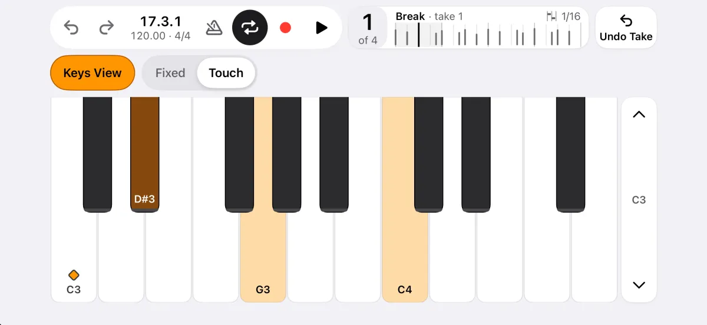
Tip: Slices in Complex warp, especially transposed ones, use the most of your iPhone’s power. When a part is finished, long‑press its clip and choose Flatten to Audio, then New Audio Track: the original clip is muted, so the Sampler stops working for it. Delete the Sampler track as well if you no longer need it, to free its memory.
Pads
Play slices or drums on a full-screen grid of 16 pads (8 by 2 in landscape), with four banks, velocity from where you hit, and note repeat from 1/4 to 1/32, triplets included.
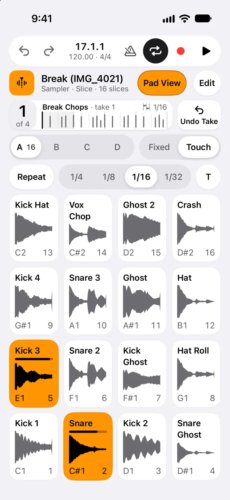
Play and record on pads
On a Sampler, hold the first page tab (it reads Classic) and choose Slice. The Slices page slices by Transients, Beats or Manual, and the keyboard turns into slice pads.
Tap Pad View at the top right for the full screen (on a Drums track, the pads button at the top). Pad View, filled, in the same place, goes back.
Banks A to D hold 64 slices. Fixed or Touch sets the velocity, and Repeat (1/4 to 1/32, T for triplets) repeats a held pad in time.
Press Record in the transport to record your hits into a clip, with a count-in. Undo Take removes the last take.
Turn on Edit, next to Pad View, and tap a pad to edit it: start, end, tune, gain, reverse and choke. Turn Edit off to play again.
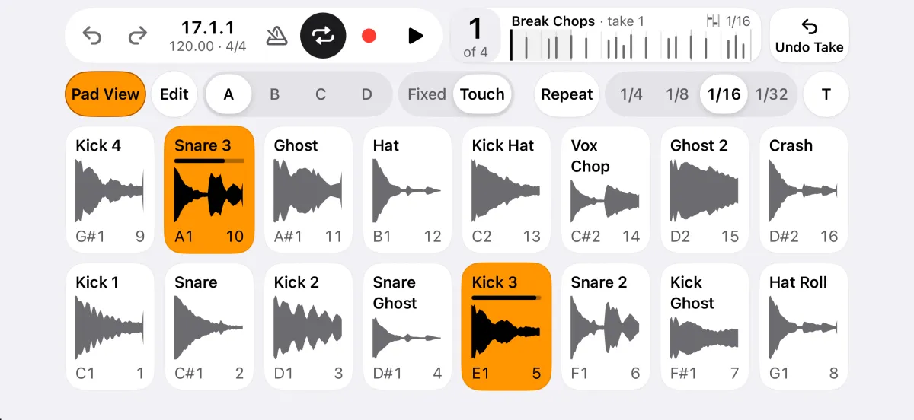
Drum Rack
Sixteen pads, and every pad is a full Sampler. Deal a random kit, re-roll one pad or one kind of sound, load your own samples, save the racks you like, and program beats with velocity and swing.
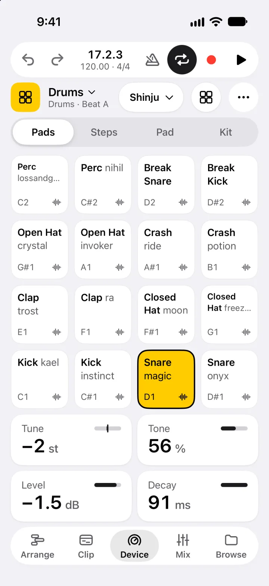
Build a beat
In Arrange, tap Add and choose Drums. The new track starts with a random kit, ready to play.
Open Device and tap the pads. The Kit page deals a New Random Rack or re-rolls every pad or one kind of sound, and Save This Rack… keeps one you like.
On Steps, make a New Clip if there is none, then tap steps to program the selected pad, with Step Velocity and Swing. A small tick marks a hit you played early or late.
On Pad, Replace loads your own sound from Files, a video or Browse, Record records one, and Sampler opens the pad’s own Sampler, whose Pitch page names the hit’s note and can tune it to the song’s key (To Song Key). You can also drag a sample from Browse: hold its row, rest on the Device tab, then drop it on a pad.
To play by moving the phone, open More and pick Gyrosynth (see Analog and FM): four drums sit around you, the snare straight ahead. Point at one and flick to hit it.
Arrangement
MIDI and audio tracks, clips you move, trim, stretch, split, duplicate, loop and consolidate, a loop brace on the ruler, and recording with a count-in. Flatten any clip to audio, undo every edit, and watch the song play in the Visualizer.
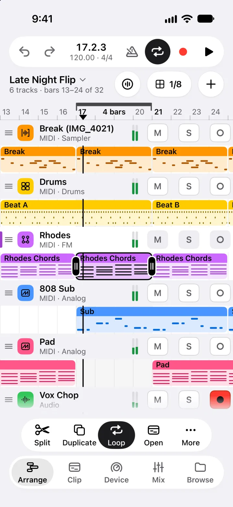
Arrange clips and the loop
Tap a clip to select it. Drag it along the song, or up or down onto another track of its kind, and drag its edges to trim it. On an audio clip, drag the square grip at the bottom-right corner to stretch the clip and its audio. The bar at the bottom has Split, Duplicate, Loop, Open and More.
Long-press a clip for Rename, Color, Consolidate, Flatten to Audio, Open in Sampler and the rest. Select there picks several clips (tap them, or drag a box across empty lanes) to move, duplicate, copy, mute or delete together; long-press an empty bar to paste. Tap an empty part of a MIDI track’s lane for a new clip.
The loop is the bar along the top of the ruler: drag its ends or its middle, or long-press it for Select Clips in Loop, Double Loop, Halve Loop and Loop to Selected Clip. Turn it on and off with Loop in the transport; with it off, drag across the ruler to draw a new one.
Pinch to zoom, and scroll with two fingers.
Record
Arm a track with the round Arm button beside M and S in its header. With nothing armed, Record arms the selected track.
Press Record in the transport. DAHW counts in, then records from the playhead: the mic on an audio track, the keys or pads on a MIDI track.
Press Record again to punch out and keep playing, or Stop to end. With the loop on, every pass is a take, and Undo removes the newest.
Tap the position readout in the transport for the tempo, the song’s Key (the first sample with a clear key sets it), the count-in, the metronome and Input Quantize. With headphones such as AirPods, Settings > Audio > Recording Latency measures the delay with eight clicks (Check), so takes land on the beat.
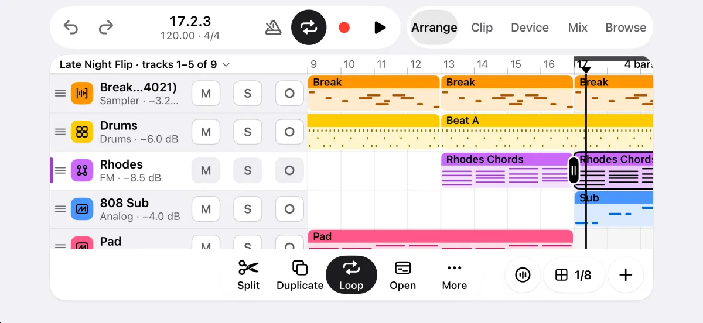
Watch it in the Visualizer
Tap the round Visualizer button left of the grid in the Arrangement’s header (in landscape, in the floating buttons at the bottom right). The song is drawn full screen as it plays, with the transport on top. The same button, filled, goes back.
There are two looks. Lens, the default, runs the notes and hits past a line under the chord, with the whole song in a strip and a magnifier on the beat. Stage puts the song’s key on an arc with the chord in big type, and a wheel for each track.
Tap the picture for the clean view, and again to bring the controls back.
Customize, beside the button, picks the look, one of eight colour palettes (Tracks uses your tracks’ colours, Custom your own), light or dark paper, full or calm motion, and the song’s title, an artist line and the readouts. It is saved with the song, and Export turns it into a video.
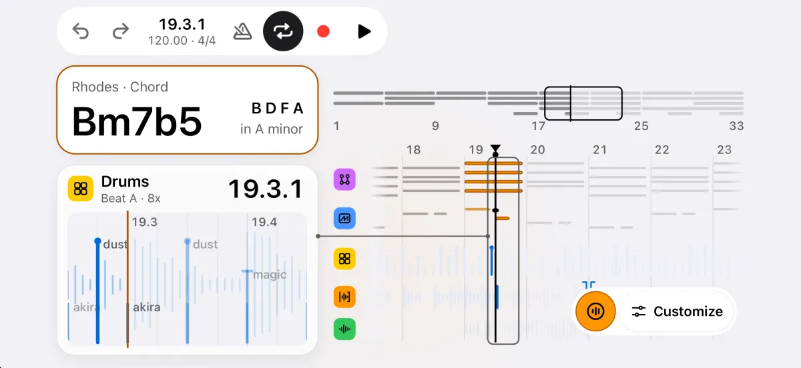
Piano roll
Tap to draw a note and drag to stretch it, select, move, copy and paste notes, shape velocity, quantize with a preview, transpose by a step or an octave, and fold the keys to the song’s scale, in portrait or landscape.
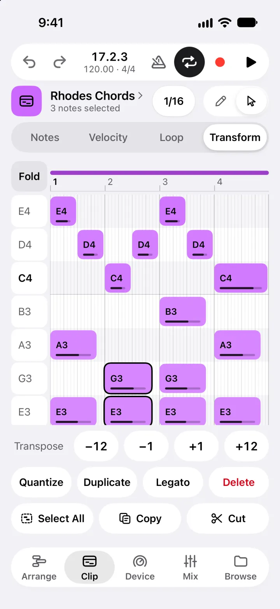
Draw notes
In Arrange, tap an empty part of a MIDI track’s lane to make a one-bar clip (drag its end to make it longer), then open Clip.
In Draw mode , tap the grid to add a note and drag right to stretch it. Tap a note to delete it.
In Select mode , tap notes to add or remove them, or drag a box across the grid, then drag any chosen note to move them all. Long-press an empty spot to paste.
Notes sets the chosen notes’ start, pitch, velocity and length, Velocity draws velocity, and Loop sets the clip’s loop. Transform has Transpose, Quantize (it shows the result before you apply it), Duplicate, Legato and Delete, then Select All, Copy and Cut.
Fold, in the corner, shows only the notes in use, or the notes of a scale, which starts at the song’s key.
Analog and FM
Analog has two oscillators, unison, a 12 or 24 dB filter, two envelopes and an LFO. FM has four operators and 11 algorithms, each drawn as a diagram. Both come with presets and you can save your own. Play them on a keyboard the size of the screen, or by moving the phone.
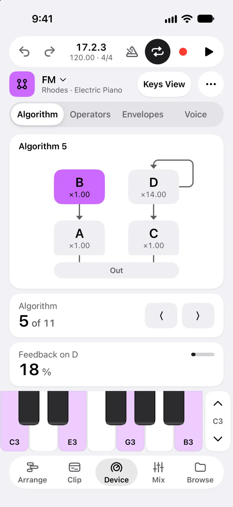
Play a synth
In Arrange, tap Add and choose Analog or FM. Device shows the synth, with the keyboard at the bottom.
Analog’s pages are Osc, Filter, Amp, Mod and Voice. FM’s are Algorithm, Operators, Envelopes and Voice.
Tap a tile to open it, then drag sideways to change the value, or tap the number to type one. A double tap resets it.
The preset’s name follows the track’s under the title, as in Rhodes · Electric Piano. Browse Presets and Save as Preset… are in the More menu.
Keys View, at the top right, turns DAHW sideways and fills the screen with keys, as on the Sampler. The filled Keys View goes back.
Play by moving the phone
On an Analog, FM, Sampler or Drums device page, open More and pick Gyrosynth. The first time, hold the phone out in front of you and tap: that way becomes the middle.
Turn left and right to point at a note of the song’s key, low on the left. With Thumb Hold on, the note plays while your thumb is on the bottom of the screen; with it off, a flick of the phone plays it.
A harder move plays louder, and a twist of the wrist makes the sound brighter or darker. The gear sets Range (1 to 3 octaves), Twist and Thumb Hold for each track.
Press Record to record what you play as notes into a clip.
Effects and mixer
Eleven effects on any track, return or the master: Vocal Tune, EQ Three, Auto Filter, Auto Pan, Compressor, Saturator, Chorus, Delay, Reverb, Limiter and Key Detect. Two sends, two returns, and a mixer with delay compensation, so every track stays in time.
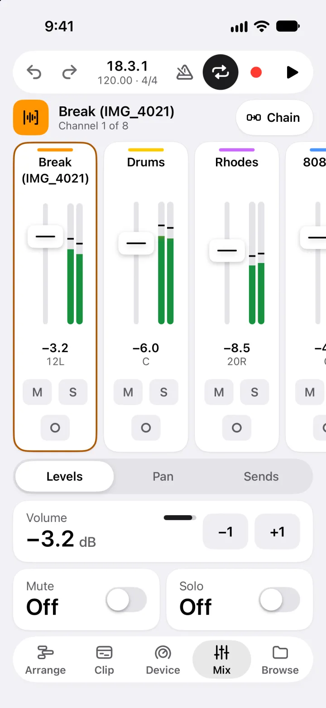
Add effects and sends
On Device, tap the device’s name at the top (Sampler, for example), or hold the Device tab from anywhere, to open the Device Chain, then tap Add Effect.
Pick an effect. Drag the handle to reorder, and use the switch to turn one off.
Vocal Tune pulls a voice onto the song’s key or a key you pick, with Speed, Flex, Vibrato and Humanize; you hear it on playback and in exports, not yet while you record. Key Detect listens while its page is open, names the key of what plays through it, and offers Use as Song Key.
In Mix, Levels has the faders and meters, Pan the stereo position, and Sends sends a track to Return A (a Reverb) and Return B (a Delay), before or after the fader.
Chain, at the top of Mix, opens the selected channel’s effects, the returns and the master included.
Export
Mix the song down to a 24-bit WAV, an M4A or a video of the Visualizer, or export stems: a WAV for every track and return, all the same length, so they line up in any DAW.
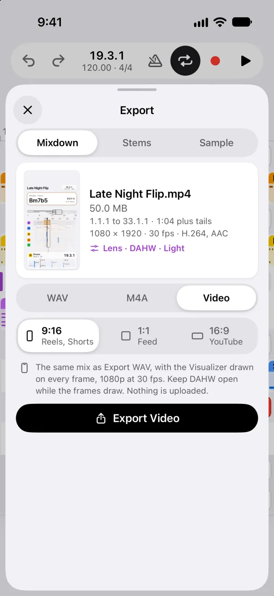
Export a song, stems or a video
Tap the project’s name at the top left of Arrange, then Export.
Mixdown makes one file of the whole song: choose WAV (24-bit), M4A or Video. Stems makes a WAV for every track and return; switch off the ones you don’t need. Sample exports one of the project’s samples.
DAHW renders on your iPhone, from the first clip to the end of the last reverb and delay tails. For audio, the share sheet opens: save to Files, AirDrop, or send it anywhere.
Video draws the Visualizer, in the song’s look and colours, over the same mix, at 1080p and 30 frames a second. Pick a shape (9:16, 1:1 or 16:9) and keep DAHW open while the frames draw. Then Save to Photos or Share.
Light and dark
Light by default, with a dark mode for dim rooms, or let it follow your iPhone. Every screen is drawn for both.
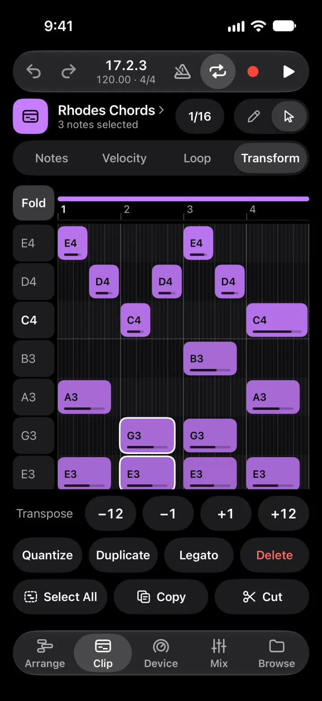
The same screen in Light and Dark
Change the appearance
Tap the project’s name at the top left of Arrange, then Settings, or tap the gear on the Projects screen.
Under Appearance, choose Light, Dark or Match iPhone. Every screen changes at once.